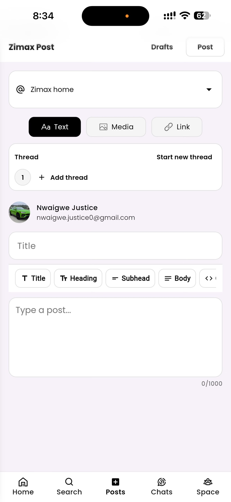
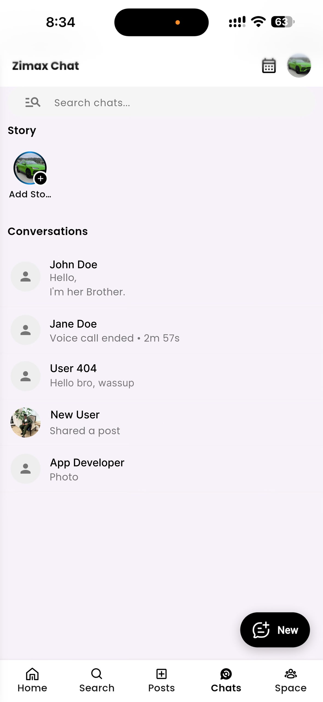

Members of Academic Community
Welcome to Zimax,
connecting campus life
A smarter way to connect, communicate, and collaborate on campus. Bringing students and the entire campus community together through seamless communication, and shared experiences.

Zimax Ecosystem.
Get a quick preview of the Zimax ecosystem and discover how its interconnected features and services work together
Home
Trending media and RegularUpdates
Posts
Content media
dissemination
Chats
Conversations and
engagement
Space
Collaborative
workspaces
Specifically designed for campus based activities
Seamless
Broadcasting Platform
Important posts reaching their intended audiences without relying on multiple communication channels.

Posting

Home feed

Chats
Zimax's
Collaborative space
A shared space for ideas, discussions, and meaningful collaboration.

Resource Accessibility
Ensuring all students have equal access to educational resources regardless of their background or location.
Peer to peer Learning
Students can learn from each other through direct interaction and knowledge sharing.
Group Collaboration
Students can work together on projects and assignments, in group based environments.
Online Presence
Students can showcase their work and build a professional online profile.
zimax as a campus platform
By bringing communication, collaboration, information sharing, and campus engagement into one ecosystem, Zimax aims to bridge institutional boundaries and create a more connected academic community nationwide.